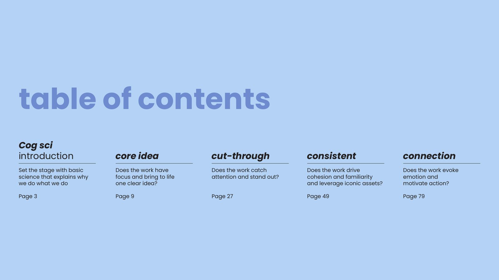
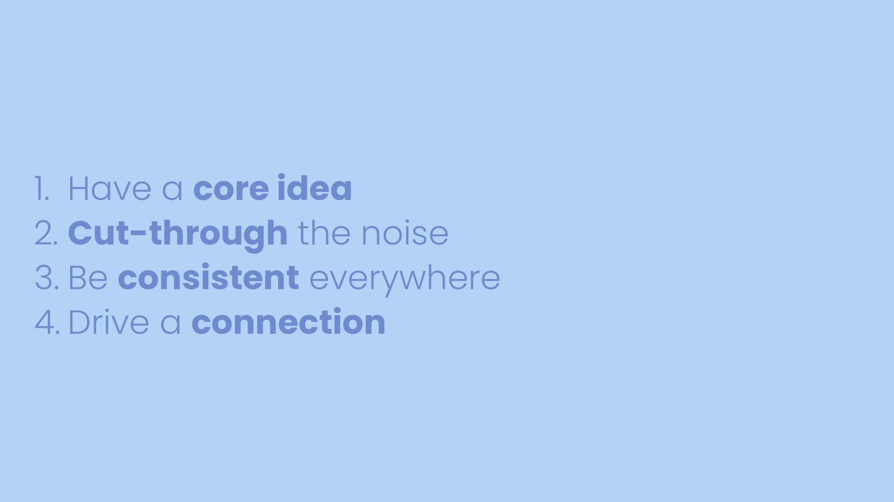
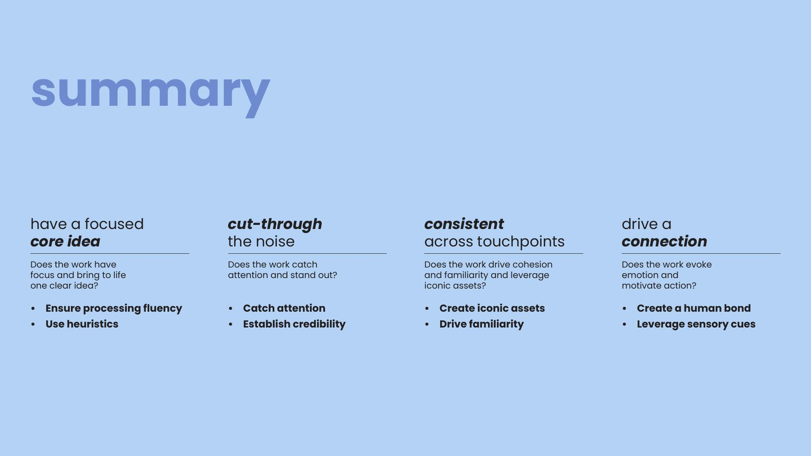
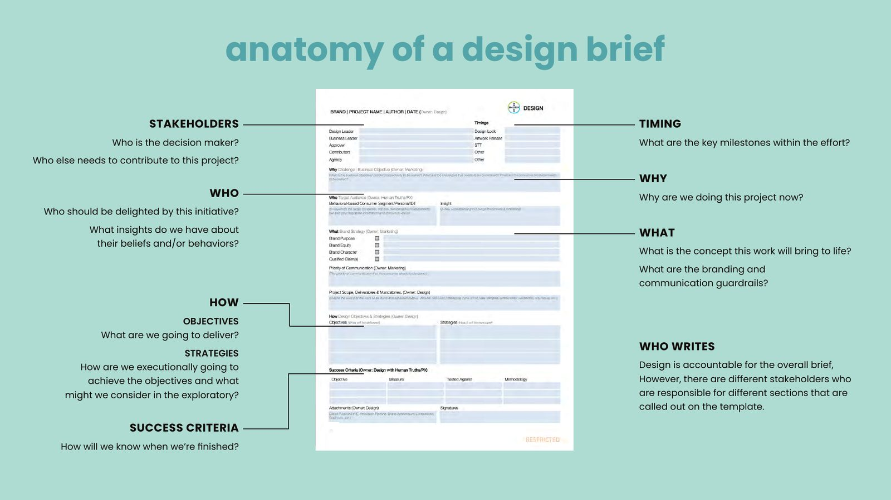
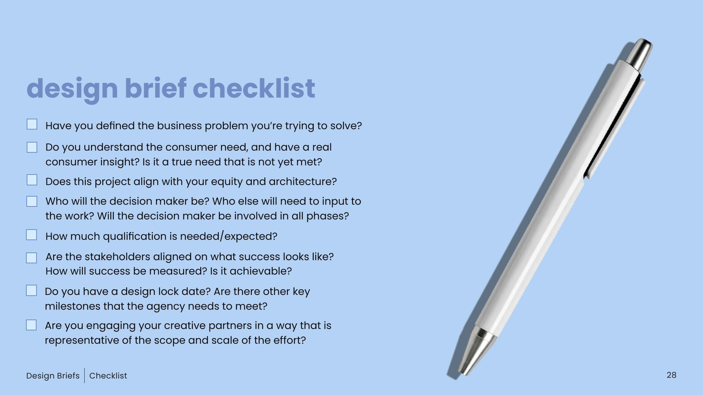
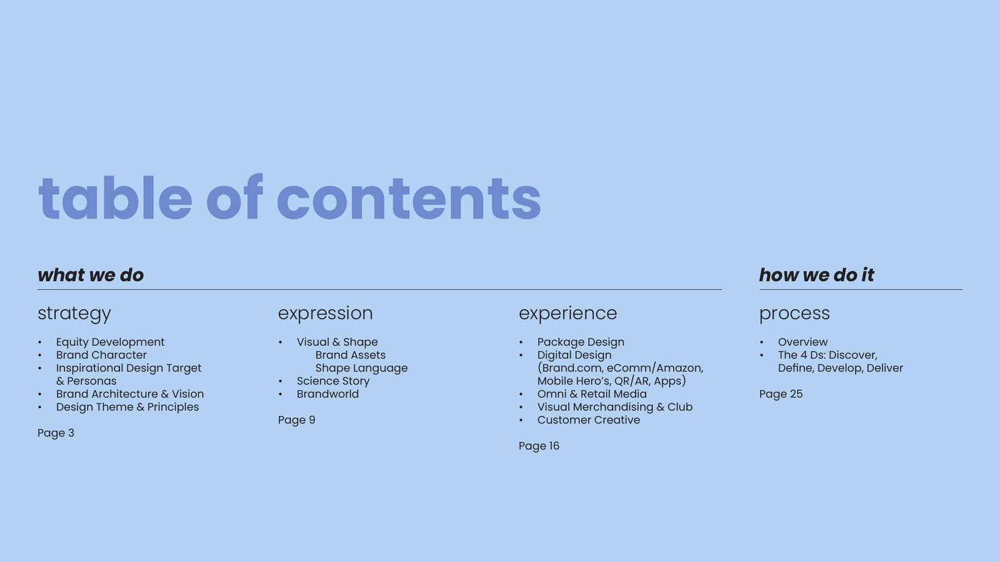
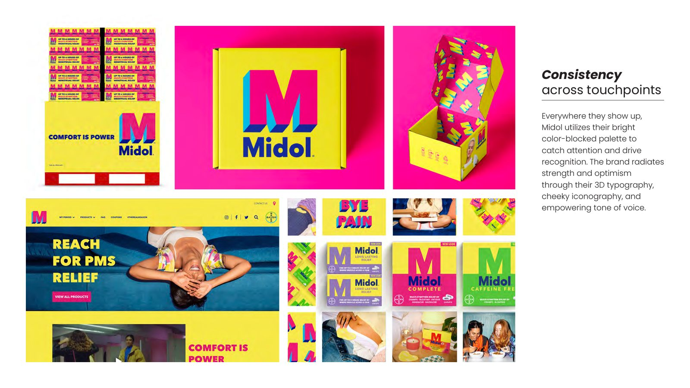
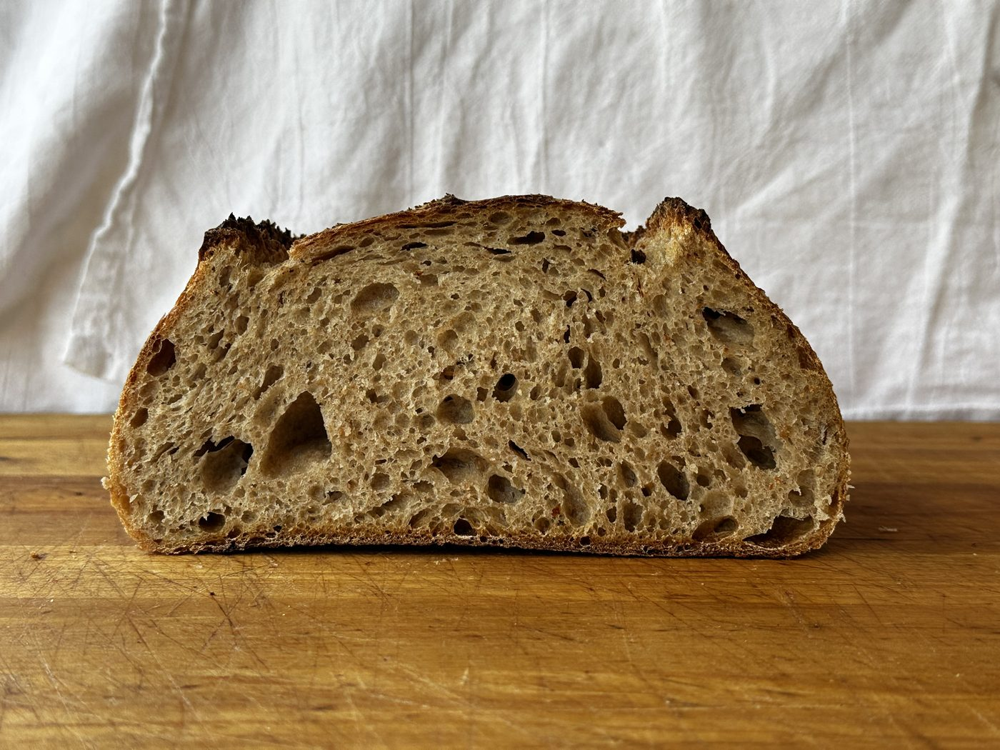
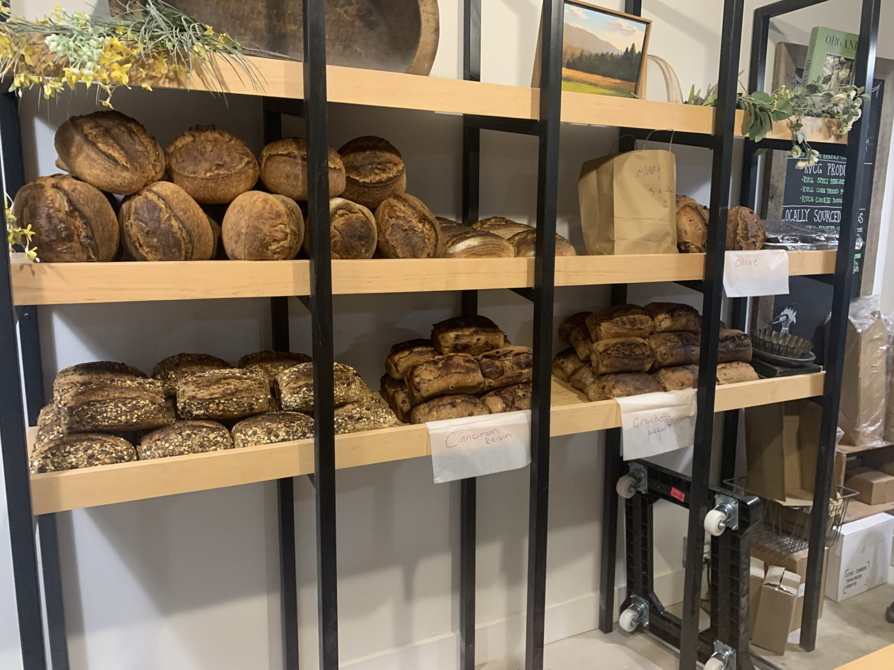

A thousand people who agreed with me and then did it wrong anyway
For eight years I taught drawing and painting to people who had never done it — more than a thousand of them, mostly in public classes of twenty-five to fifty, many of whom had not come to learn anything. It was largely a paint-and-sip studio, which is the part I would defend hardest: you cannot tell forty people who came out for a night to observe more carefully and expect it to land.
Beginners draw what they know instead of what they see. Ask for a hand and you get the symbol of a hand, because the head supplies an answer before the eye gets a turn. You cannot fix that by explaining it — I explained it a thousand times, and every single person agreed with me, then drew the symbol again thirty seconds later.
What works is a procedure that runs at the moment the decision gets made. Hold the pencil up. Measure the angle. Not see better. Measure.
The teaching has to survive the moment the learner is not thinking about the teaching, which is every moment that matters. Everything I have taught since has been the same move.
Which tool am I supposed to use?
Today it is AI: for a 115-person global product organization, and — as my part of a divisional roadmap covering more than a thousand people — a learning track I am still building.
The most common question is not how do I write a better prompt. It is which tool am I supposed to use?, because there are three of them running at once and nobody has said. For a long time I tried to answer that question. The answer is not to answer it. Move the knowledge out of the tools and into a layer any of them can read, and the choice stops being a decision worth agonizing over.
I have built that three times without noticing it was the same idea: once for myself, once for a team, once for an organization. It is the pencil held up at arm's length, wearing different clothes.
Six times, four subjects
Every time, without ever planning it, I did the same thing: taught the idea, watched it fail to survive the room, then changed the situation rather than the person.
What I have actually built and taught
Two organization-wide programs at Bayer Consumer Health, both written to be delivered by people other than me — which is the only test of a curriculum that counts.
Design Capability Curriculum · 2023 · co-author
Five modules. It launched as required training inside the marketing organization — a hundred-plus marketers who had not asked to be there. I delivered three of the sessions myself. It is now mandatory on the internal learning platform, where it still runs without me, and it was later extended beyond marketing, including to the Science organization.
Cognitive Science Applied to Branding
System 1 and System 2 decision-making, mental availability, distinctive assets.
Writing Remarkable Design Briefs
The module that worked, and then taught me the most when it didn't go far enough.
The 4D Design Process
Discover, Define, Develop, Deliver — a shared vocabulary between design and its partners.
Brand case study
The principles run against a real portfolio brand rather than an invented one.
The anchor module runs to 103 slides, and it is built the way I would build any course: teach the mental model before any tactic, give every chapter its own science, strategies and exercise, and make the learner commit to a diagnosis before being told the answer.










Inclusive Design standard · 2024 · co-author · 189 slides
A standard for internal colleagues and external agency partners — people who would never sit in a room with me — teaching how to make material legible to people whose vision, cognition, motor control or hearing does not match the designer's. It adopts WCAG AA across the entire consumer journey: print, web, mobile, pack, point of sale. Five evaluation factors, each with its own designer checklist.
The demonstrations below are rebuilt here, live, rather than shown as screenshots — partly because a page about legibility should be legible, and partly because a test you can see running is a better argument than a picture of one.
Your own eyes are not evidence
A designer with good vision, at a calibrated monitor, at arm's length, is the worst possible instrument for judging whether a warning on a carton can be read in a pharmacy aisle by someone who is sixty-eight. So the standard stops asking people to judge, and gives them tests.
Both of these looked fine to somebody. The threshold is 4.5 : 1 for regular text below 18pt and small icons, 3 : 1 for bold text above 18pt and large icons. The ratios above are computed, not estimated — which is the entire point. Taste has no opinion a calculator will respect.
The same panel, blurred to approximate reduced acuity. The headline survives; the dosage line — the part that actually matters — does not. The standard names a tool for this rather than leaving it to judgement: Clari-Fi, the University of Cambridge Inclusive Design Toolkit's calibrated Gaussian-blur test. The second panel is decorative and hidden from screen readers; it repeats the text above it.
Capital I, lowercase l, numeral 1, set in three typefaces at the same size. In the first they are very nearly the same mark. The standard specifies open apertures and counters, and letterforms where these three stay distinct and b/d and p/q are not mirror images — because a typeface chosen on taste will fail a reader you never met. On a dosage, that is not an aesthetic problem.
Red and green at similar tonal values. In grayscale — which is how the standard asks you to review, and roughly how a red-green color-deficient reader receives it — the two collapse into the same gray, and the only thing distinguishing a warning from a reassurance is the word itself. The second row is decorative and repeats the first.
189 slides are knowledge. One line is the reason it survives.
The part I am proudest of is none of the tests. It is a single sentence near the end of the document.
The Rule. All text and graphics in digital assets to meet WCAG AA standard. Final check on contrast levels carried out at QC stage for all digital assets.
Inclusive Design standard, 2024
Not advice about contrast. A step in a process, with a threshold, a retest loop and a pass condition — run by whoever happens to be doing QC that day:
That line is the only reason the knowledge survives contact with a Tuesday afternoon and a shipping deadline. It works on somebody who was never in the training, has not read the standard and does not care about it — which is the only test that counts.
I assumed it was a knowledge problem
One module of the capability curriculum teaches how to write a design brief. The training worked: the briefs got better.
But the questions kept coming — and here I did the exact thing I tell everyone else not to do. I assumed the fix was to teach it again, harder.
When we finally went and looked at the briefing process itself, the obstacle was not knowledge at all. People knew perfectly well what a good brief contained. They could not assemble the pieces without three days of asking around, so under deadline they shipped what they had. Missing information, not missing knowledge — and no amount of additional teaching was ever going to touch that. So we built a tool that closes the information gap instead.
When people fail to apply what you taught, teaching harder is usually the wrong response. Find out why the moment fails. Often it is not a knowledge problem at all, and the fix is to change the situation rather than the person.
I had been doing this by instinct since the drawing classes and had never once said it out loud. Writing it down is the only reason I noticed it was the same move every time.
Bread, at a flour mill, in groups of six
Since 2025 I have taught bread-making to adults and children at a flour mill — small community groups of four to six, starting with where the grain and the flour come from rather than with the recipe.
Fermentation is the hardest possible case for the argument in this essay. The feedback loop is hours long and most of the variables are invisible, so you'll know when it feels right is the single most useless sentence you can say to somebody who has never once felt it right. So instead: the poke test, the windowpane, the temperature of the dough, and timing scaled to the warmth of the room.


Different flour. Same pencil, held up at arm's length.
Notice anything different?
About 165 slides into the accessibility standard, it stops and asks the reader exactly that — then lists what had been changed about the training template itself to bring it in line with what it was teaching. A standard that has not been applied to itself is a proposal.
So this page is set to the standard it describes:
- Every text and background pair was computed and passes WCAG AA. The muted gray inherited from my craft portfolio measured 3.57 : 1 — a fail — and was darkened until it passed.
- The two intentionally failing samples above are demonstrations, labelled as such, and carry no information that is not also stated in the text.
- Decorative duplicates — the blurred panel, the grayscale chips — are hidden from screen readers so nothing is announced twice.
- Every image describes what it demonstrates, not merely what it depicts.
- Headings run in real order, focus states are visible, and a reduced-motion preference is honored.